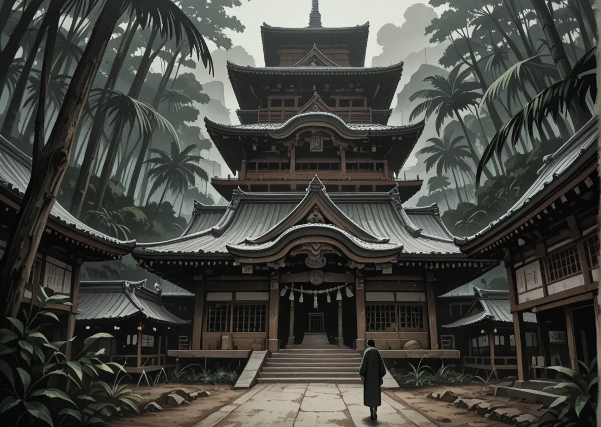

Mayores
Sanshoo (Salamandra) · Ooyamaneko (Lince) · Harinezumi (Erizo) · Kitsune (Zorro) · Saru (Mono)
Al Norte se encuentra Hi, el fuego, con su capital situada dentro de un extinto volcán y rodeada de un gran bosque nacido de la fértil tierra proveniente de las cenizas. Dentro de Kaze, existe una zona remota con la montaña más alta de Shikoku, y en cuya inmensa cima (Tengudake) se sitúa el Yosai de Tengoku, la fortaleza de los cielos, por encima de las nubes y casi siempre nevado —texto íntegro p.4 de nakama.txt.
Viven un momento de esplendor, parecen recuperados de esa época en la que tenían que entregar todas las cosechas al Kotei, y por primera vez en mucho tiempo, parecen haber recuperado la felicidad... excepto su Shogun, que perdió a su esposa en la batalla por derrocar al Kobura. La fortaleza prospera, pero hay muchas dudas.

Sanshoo (Salamandra) · Ooyamaneko (Lince) · Harinezumi (Erizo) · Kitsune (Zorro) · Saru (Mono)
Tanuki (Mapache) · Risu (Ardilla) · Tori (Gallo) · Hyoo (leopardo) · Buta (Cerdo)
El Shogun viudo busca alianzas matrimoniales para estabilizar el Yosai. Los PJs deben escoltar a una prometida de Kaze.
Casas menores como Risu quieren casarse con Kitsune para ascender; las mayores bloquean el matrimonio —voto del Consejo—.
Capital excavada en la caldera del volcán extinto Kazan. Calles en anillos concéntricos, el palacio del Shogun en el cráter central y el bosque de cenizas en las laderas exteriores. El calor geotermal alimenta baños, forjas y el Festival de la Brasa cada luna nueva.
Shogun Hi no Akane (Salamandra) — viuda de guerra, 34 años, cabello rojo intenso, armadura negra y roja. Gobierna con el Consejo de las Cinco Mayores. Su hija Hotaru (12) es la heredera y alumna de Kitsune.
Hi valora la forja y el duelo. Cada Kazoku mantiene su fragua y su dojo. El saludo es con la mano sobre el corazón en llamas. Los niños aprenden a caminar sobre brasas frías a los 6 años.
Exporta acero de ceniza, carbón y pimientos picantes. Importa madera de Kaze y pescado de Mizu. El bosque de cenizas da setas negras muy cotizadas por Reikon.
Daimyo Sanshoo Renjiro (42, pelirrojo). Especialidad: jutsus de fuego que ignoran absorción. Dojo en la forja central. Rivalidad con Kitsune por el precio del carbón.
Daimyo Kitsune Ayame (29, nueve colas pintadas en el kimono). Maestra en ilusiones y Disfraz. Su hija quiere casarse con un Risu para ganar apoyo popular.
Hermanos Kokoro y Shin (16, gemelos). Entrenados por Tanuki. Sueñan con que su boda con Tora les haga mayores. Su madre guarda el Mapa de la Grieta del volcán.